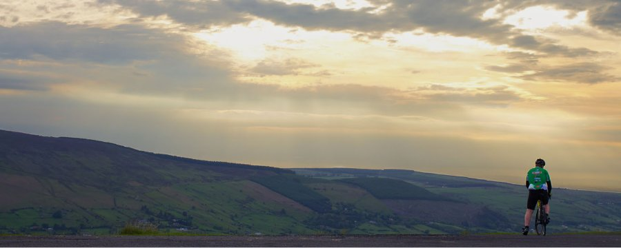

Van knooppunt naar knooppunt
Stippel je eigen lus uit langs de kammen van de Westhoek.
Vier lussen om te beginnen
Kemmelberg
8 km
Kort en stevig, met het steilste stuk meteen aan het begin.
Zwarte Berg
12 km
Half bos, half open veld, en een café op de helft.
Rodeberg
15 km
De klassieker, met zicht tot aan de kust bij helder weer.
Galgebossen
19 km
De langste, vlakste en stilste van de vier.
Praktisch
De knooppunten staan om de driehonderd meter aangeduid. Je hebt geen kaart nodig, maar de papieren versie is handig als je netwerk wegvalt.
Onderweg passeer je zeven cafés die aan het netwerk meewerken. Wie een routeboekje laat afstempelen, krijgt bij het laatste café een streekbier.